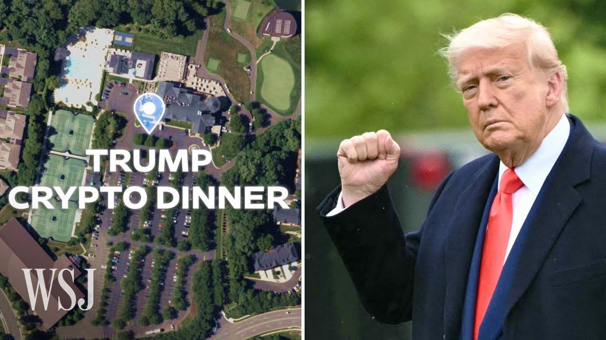

【大家好！很高兴在这里见到你们。我终于参加了唐纳德·特朗普的晚宴。周四晚上，特朗普总统为220名持有他自己模因币的大户举办了一场私密且有争议的加密货币晚宴。晚宴的部分争议在于参与者大多匿名，仅通过短用户名和加密钱包识别。区块链数据显示许多持有者是外国人。《华尔街日报》通过实地报道、采访、社交媒体以及独家获得的视频和邮件，揭示了这场秘密活动的细节。晚宴在华盛顿特区外的特朗普高尔夫球场举行，嘉宾抵达时遇到了抗议者。高调出席的嘉宾包括中国出生的加密亿万富翁孙宇晨。特朗普在演讲中表达了对加密货币的支持，但批评者认为这场晚宴可能违反了官员收礼的规定。】
Summary: Hello guys! So it's nice to meet you here.
摘要： 大家好！很高兴在这里见到你们。

⏱️ Estimated Reading Time: 12 min
I'm finally on the gala dinner with Donald Trump.
我终于参加了唐纳德·特朗普的晚宴。
Build as the most exclusive invitation in the world, President Trump held a private and controversial cryptocurrency dinner on Thursday night for 220 of the largest holders of his own meme coin.
作为世界上最独家的邀请，特朗普总统周四晚上为220名持有他自己模因币的大户举办了一场私密且有争议的加密货币晚宴。
This is a historical moment when 47th President Donald Trump performed a speech for us.
这是第47任总统唐纳德·特朗普为我们发表演讲的历史性时刻。
You cannot compare it to the any reward that are available in the market right now.
你无法将其与市场上现有的任何奖励相提并论。
Part of the controversy is that those buying into the dinners stayed largely anonymous to the public, known only by short usernames and crypto wallets.
争议的部分在于，购买晚宴席位的人大多对公众匿名，仅通过短用户名和加密钱包识别。
Blockchain data suggests many were held by foreigners.
区块链数据显示许多持有者是外国人。
The Journal was able to identify and speak with more than a dozen of the people or companies who said they'd received an invite.
《华尔街日报》能够识别并与十几位自称收到邀请的人或公司交谈。
Through on the ground reporting from Virginia, interviews with people who were inside the dinner, social media, and videos and emails shared exclusively with The Journal, here's what we learned about the secretive event.
通过弗吉尼亚的实地报道、晚宴参与者的采访、社交媒体以及独家获得的视频和邮件，我们了解了这场秘密活动的细节。
Trump literally spoke right behind me.
特朗普就在我身后讲话。
This is how close I am to it.
这就是我离他有多近。
Great experience.
很棒的体验。
The competition was announced back in April.
这项竞赛早在四月就已宣布。
In addition to the dinner, the top 25 holders would get a VIP reception.
除了晚宴，前25名持有者还将获得VIP接待。
The top four would also get a Trump watch.
前四名还将获得一块特朗普手表。
The day that Trump released this coin, I immediately bought.
特朗普发布这枚币的那天，我立刻就买了。
And my friend hit me up.
我朋友联系了我。
He was saying like, "I don't think this competition is very competitive and maybe we can like sneak in."
他说：“我觉得这个竞赛竞争不大，也许我们可以混进去。”
The price of the coin, which had fallen after initial excitement of its debut wore off, surged after the announcement.
这枚币的价格在首发时的兴奋消退后下跌，但在宣布后飙升。
But criticism quickly followed.
但批评很快接踵而至。
He is essentially selling access to himself.
他本质上是在出售接近自己的机会。
Donald Trump's dinner is an orgy of corruption.
唐纳德·特朗普的晚宴是一场腐败的狂欢。
The White House did not respond to our request for comment, but has denied these claims repeatedly.
白宫没有回应我们的置评请求，但一再否认这些说法。
It's absurd for anyone to insinuate that this President is profiting off of the presidency.
任何人暗示这位总统从总统职位中牟利都是荒谬的。
There are defenders of President Trump who argue that this meme coin dinner isn't that different from a big ticket donor dinner that previous presidents might have arranged.
特朗普总统的辩护者认为，这场模因币晚宴与前任总统可能安排的高额捐款晚宴没有太大不同。
I think the difference is the way this was done.
我认为区别在于这次的方式。
It was organized as a raffle and that clearly went to his own private business interests rather than to, say, a Super PAC raising money for his election campaign.
它是作为抽奖活动组织的，显然是为了他的私人商业利益，而不是为他的竞选活动筹款的超级政治行动委员会。
Ahead of the event, some attendees announced their plans to go on social media, like former NBA star Lamar Odom.
活动前，一些出席者在社交媒体上宣布了他们的计划，比如前NBA球星拉马尔·奥多姆。
You will be able to attend, I take it?
你能参加，对吧？
Of course, to meet President Donald Trump.
当然，去见唐纳德·特朗普总统。
Fantastic.
太棒了。
Showing off the cars they plan to drive,
炫耀他们计划驾驶的汽车，
So I can just choose any of these.
所以我可以随便选一辆。
And even a shopping trip.
甚至还有购物之旅。
An email sent to guests said that they could start arriving at 5:30 PM.
发给嘉宾的邮件说他们可以在下午5:30开始抵达。
The dinner was held at Trump's golf course just outside of Washington, D.C.
晚宴在华盛顿特区外的特朗普高尔夫球场举行。
So guys, it's super excited moment that I'm heading to the gala dinner with the 47th President of the United States, Donald Trump.
所以伙计们，这是一个超级激动的时刻，我要去参加美国第47任总统唐纳德·特朗普的晚宴。
As guests begin arriving, they were met by a crowd of protestors.
当嘉宾开始抵达时，他们遇到了一群抗议者。
Shame! Shame! Shame! Shame! Shame!
可耻！可耻！可耻！可耻！可耻！
America is not for sale!
美国不是用来卖的！
Entering the venue were high profile guests, like Justin Sun, a Chinese-born crypto billionaire.
进入会场的是高调嘉宾，比如中国出生的加密亿万富翁孙宇晨。
I looked to my side, and then I thought to myself, I said, "Wait, that's Justin Sun."
我看向旁边，然后心想：“等等，那是孙宇晨。”
In videos posted to social media, Sun celebrated the evening.
在社交媒体发布的视频中，孙宇晨庆祝了这个夜晚。
He was the top holder of the Trump coin.
他是特朗普币的最大持有者。
He has also invested 75 million in the Trump family-backed crypto venture, World Liberty Financial.
他还向特朗普家族支持的加密企业World Liberty Financial投资了7500万美元。
Under the Biden administration, regulators sued him for fraud.
在拜登政府时期，监管机构以欺诈罪起诉了他。
In February, the Securities and Exchange Commission asked a court to pause its lawsuit.
二月，美国证券交易委员会要求法院暂停诉讼。
Son has previously denied the SEC's allegations and his representatives did not respond to requests for comment.
孙宇晨此前否认了SEC的指控，他的代表没有回应置评请求。
It wasn't that long ago that he was being sued by the Securities Exchange Commission and facing a DOJ investigation, and did not seem to show up in the United States very much.
不久前，他还被美国证券交易委员会起诉并面临司法部调查，似乎很少出现在美国。
Now, he's in the US and meeting with the President of the United States.
现在，他在美国并与美国总统会面。
Other big names in crypto included Evgeny Gaevoy, CEO of crypto market maker Wintermute, a trading firm which established an office in New York this month.
其他加密领域的知名人士包括加密做市商Wintermute的CEO叶夫根尼·加沃伊，该公司本月在纽约设立了办事处。
And Matthew Liu of Origin Protocol, which, according to this video posted to X, recently hosted a crypto summit at Mar-a-Lago.
还有Origin Protocol的马修·刘，根据发布在X上的视频，他们最近在Mar-a-Lago举办了一场加密峰会。
In general, I think that it was a mix of people who were there kind of for fun and for the whole craziness of it, and people who had an agenda and wanted to get in front of the President.
总的来说，我认为那里的人有些是为了好玩和整个疯狂的事情，有些是有议程并想接近总统。
There was a two room, one for top of VIP, 25 peoples, and the big hall for like, rest 200 peoples.
有两个房间，一个是给前25名VIP的，另一个大厅是给剩下的200人。
Around 7:00 PM, President Trump arrived by helicopter.
晚上7点左右，特朗普总统乘直升机抵达。
Then, videos posted to social media show he went to the VIP reception area.
然后，社交媒体发布的视频显示他去了VIP接待区。
What a nice place. Did you get to see the helicopters?
多好的地方。你看到直升机了吗？
Yeah!
看到了！
Yeah, super cool!
是的，超级酷！
Over in the grand ballroom, the rest of the guests mingled and went through their gift bags.
在大宴会厅里，其他嘉宾互相交流并查看了他们的礼品袋。
Bill Zanker, whose LLC launched the coin with an affiliate of the Trump family business, gave a speech.
比尔·赞克的公司与特朗普家族企业的关联公司一起推出了这枚币，他发表了演讲。
I just love the Trump coin. The Trump coin was the most successful launch in history, period.
我就是喜欢特朗普币。特朗普币是有史以来最成功的发行，就这样。
I hope the 48th President of the United States is Donald J. Trump.
我希望美国第48任总统是唐纳德·J·特朗普。
That was the moment everyone was waiting for, right?
那是大家都在等待的时刻，对吧？
At this moment, it was no matter where your seat was, everyone just moved forward.
这一刻，无论你坐在哪里，每个人都向前移动。
Trump made a speech thanking the attendees.
特朗普发表了演讲，感谢出席者。
He talked about his support for crypto and the previous administration's lack thereof.
他谈到了对加密货币的支持以及前任政府在这方面的不足。
A lot of sense in crypto, a lot of common sense in crypto, and we're honored to be working on helping everybody here.
加密货币有很多道理，很多常识，我们很荣幸能帮助这里的每个人。
Trump didn't mingle with the crowd.
特朗普没有与人群交流。
He left shortly after his speech.
他在演讲后不久离开了。
I'm currently at the Trump dinner.
我现在在特朗普的晚宴上。
Trump came, give a speech for like, probably 23 minutes.
特朗普来了，发表了大约23分钟的演讲。
I think that's the exact time.
我想就是这么多时间。
And then he left. Left on a helicopter right back there.
然后他离开了。乘直升机离开了。
I am very disappointed with the dinner.
我对晚宴非常失望。
I did not like the menu.
我不喜欢菜单。
I was expecting either Big Macs or pizza.
我期待的是巨无霸或披萨。
I'm very disappointed that President Trump didn't spend more time at the event.
我非常失望特朗普总统没有在活动上花更多时间。
He was not interacting with us.
他没有与我们互动。
He gave a short speech.
他发表了简短的演讲。
It was kind of, I wasn't very impressed by the speech, to be honest.
老实说，我对演讲印象不深。
I would've liked for him to dine with us, maybe spend more time.
我希望他能和我们一起用餐，也许花更多时间。
For those in attendance, it was largely a networking event.
对出席者来说，这主要是一场社交活动。
I try, personally I can speak for myself, try to get as many contacts as I can.
我个人来说，我尽量获取尽可能多的联系人。
So, I think I speak with more than 50 people this night.
所以，我想今晚我和超过50人交谈了。
It was a whole a lot of experience.
这是一次丰富的经历。
This kinda shows that he's willing to do something with the coin.
这显示他愿意为这枚币做些什么。
For the future, it will give more confidence for investors and collectors.
对未来来说，这将给投资者和收藏者更多信心。
He declared yesterday that he loved crypto and he want to embrace the people who took a risk to build and invest in crypto.
他昨天宣布他热爱加密货币，并希望拥抱那些冒险建设和投资加密货币的人。
Others were less enthused.
其他人的热情较低。
Government watchdog groups say the dinner may have violated several rules around officials accepting gifts.
政府监督组织表示，这场晚宴可能违反了官员收礼的多项规定。
Senators have requested a federal ethics investigation, but it's currently unclear whether the President will face any inquiries.
参议员已要求联邦道德调查，但目前尚不清楚总统是否会面临任何调查。
Critics of President Trump say that this dinner is simply a way to sell access.
特朗普总统的批评者表示，这场晚宴只是出售接近机会的一种方式。
And it's coming at a time when the President is essentially set to rewrite US crypto regulation.
而且这是在总统即将重写美国加密货币法规的时候。
And many of the people paying to attend this dinner with him want to shape the future of that regulation.
许多付费参加这场晚宴的人希望塑造这些法规的未来。
To critics, that smells of bribery.
对批评者来说，这有贿赂的味道。
I understand that there has been a concealable criticism surrounding the events, but I view this event as a social experiment related to crypto.
我理解围绕这些活动有一些可隐藏的批评，但我认为这是一场与加密货币相关的社会实验。
And the outcomes of the experiment is something we need to observe over time.
实验的结果需要我们随着时间的推移来观察。